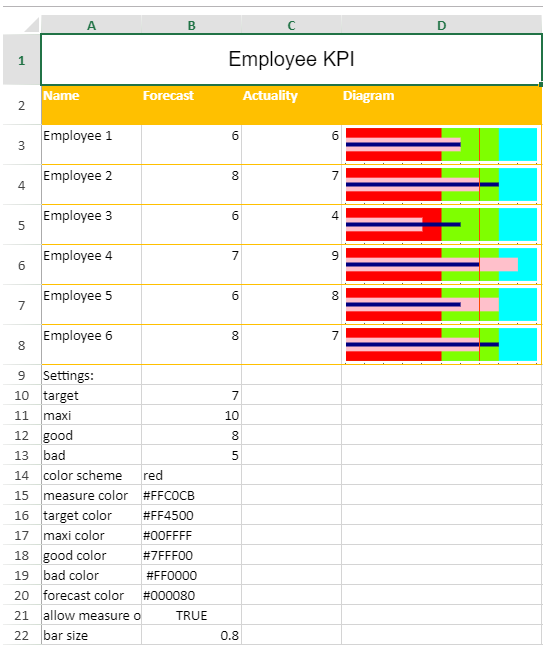

You can create a bullet sparkline using the BulletSparkline formula and cell values.

The bullet sparkline formula has the following options:
| Option | Description |
| measure | A number or reference that represents the length of the measure bar, such as 5 or "A1". |
| target | A number or reference that represents the location of the target line, such as 7 or "A2". |
| maxi | A number or reference that represents the maximum value of the sparkline, such as 10 or "A3". |
| good | A number or reference that represents the length of the good bar, such as 3 or "A4". This setting is optional. The default value is 0. |
| bad | A number or reference that represents the length of the bad bar, such as 1 or "A5". This setting is optional. The default value is 0. |
| forecast | A number or reference that represents the length of the forecast line, such as 8 or "A6". This setting is optional. The default value is 0. |
| tickunit | A number or reference that represents the tick unit, such as 1 or "A7". This setting is optional. The default value is 0. |
| colorScheme | A string that represents a color scheme for displaying the sparkline. This setting is optional. The default value is "#A0A0A0". |
| vertical | A boolean value that indicates whether to display or not the sparkline vertically. This setting is optional. The default value is false. |
| measureColor | A color string that indicates the color of measure bar. |
| targetColor | A color string that indicates the color of target line. |
| maxiColor | A color string that indicates the color of the maxi area. |
| goodColor | A color string that indicates the color of the good area. |
| badColor | A color string that indicates the color of the bad area. |
| forecastColor | A color string that indicates the color of the forecast line. |
| allowMeasureOverMaxi | A Boolean value that indicates whether the measure can exceed maxi area. The default value of this parameter is false. |
| barSize | A number value greater than 0 and equal to or less than 1, which indicates the percentage of bar width or height according to the cell width or height. |
The bullet sparkline formula has the following format:
=BULLETSPARKLINE (measure, target, maxi, good, bad, forecast, tickUnit, colorScheme, vertical, measureColor, targetColor, maxiColor, goodColor, badColor, forecastColor, allowMeasureOverMaxi, barSize)
The following code creates bullet sparklines.
| JavaScript |
Copy Code
|
|---|---|
// initializing Spread var spread = new GC.Spread.Sheets.Workbook(document.getElementById('ss'), { sheetCount: 1 }); // get the activesheet var activeSheet = spread.getSheet(0); activeSheet.addSpan(0, 0, 1, 4); activeSheet.getCell(0, 0, GC.Spread.Sheets.SheetArea.viewport).value("Employee KPI").font("20px Arial").hAlign(GC.Spread.Sheets.HorizontalAlign.center).vAlign(GC.Spread.Sheets.VerticalAlign.center); var table1 = activeSheet.tables.add("table1", 1, 0, 7, 4, GC.Spread.Sheets.Tables.TableThemes.light12); table1.filterButtonVisible(false); activeSheet.setValue(1, 0, "Name"); activeSheet.setValue(1, 1, "Forecast"); activeSheet.setValue(1, 2, "Actuality"); activeSheet.setValue(1, 3, "Diagram"); activeSheet.setValue(2, 0, "Employee 1"); activeSheet.setValue(2, 1, 6); activeSheet.setValue(2, 2, 6); activeSheet.setValue(3, 0, "Employee 2"); activeSheet.setValue(3, 1, 8); activeSheet.setValue(3, 2, 7); activeSheet.setValue(4, 0, "Employee 3"); activeSheet.setValue(4, 1, 6); activeSheet.setValue(4, 2, 4); activeSheet.setValue(5, 0, "Employee 4"); activeSheet.setValue(5, 1, 7); activeSheet.setValue(5, 2, 9); activeSheet.setValue(6, 0, "Employee 5"); activeSheet.setValue(6, 1, 6); activeSheet.setValue(6, 2, 8); activeSheet.setValue(7, 0, "Employee 6"); activeSheet.setValue(7, 1, 8); activeSheet.setValue(7, 2, 7); activeSheet.setValue(8, 0, "Settings:"); activeSheet.setValue(9, 0, "target"); activeSheet.setValue(9, 1, 7); activeSheet.setValue(10, 0, "maxi"); activeSheet.setValue(10, 1, 10); activeSheet.setValue(11, 0, "good"); activeSheet.setValue(11, 1, 8); activeSheet.setValue(12, 0, "bad"); activeSheet.setValue(12, 1, 5); activeSheet.setValue(13, 0, "color scheme"); activeSheet.setValue(13, 1, "red"); activeSheet.setValue(14, 0, "measure color"); activeSheet.setValue(14, 1, "#FFC0CB"); activeSheet.setValue(15, 0, "target color"); activeSheet.setValue(15, 1, "#FF4500"); activeSheet.setValue(16, 0, "maxi color"); activeSheet.setValue(16, 1, "#00FFFF"); activeSheet.setValue(17, 0, "good color"); activeSheet.setValue(17, 1, "#7FFF00"); activeSheet.setValue(18, 0, "bad color"); activeSheet.setValue(18, 1, " #FF0000"); activeSheet.setValue(19, 0, "forecast color"); activeSheet.setValue(19, 1, "#000080"); activeSheet.setValue(20, 0, "allow measure over maxi"); activeSheet.setValue(20, 1, true); activeSheet.setValue(21, 0, "bar size"); activeSheet.setValue(21, 1, 0.8); for (var index = 2; index < 8; index++) { activeSheet.setFormula(index, 3, '=BULLETSPARKLINE($C' + (index + 1) + ',$B$10,$B$11,$B$12,$B$13,$B' + (index + 1) + ',1,$B$14,false,$B$15,$B$16,$B$17,$B$18,$B$19,$B$20,$B$21,$B$22)'); } activeSheet.setRowHeight(0, 50); for (var i = 1; i < 8; i++) { activeSheet.setRowHeight(i, 40); } activeSheet.setColumnWidth(0, 100); activeSheet.setColumnWidth(1, 100); activeSheet.setColumnWidth(2, 100); activeSheet.setColumnWidth(3, 200); |
|